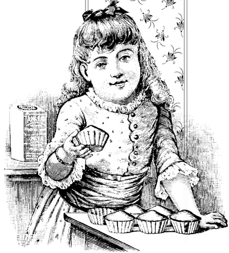

Шоколадный антицеллюлитныи массаж .

При помощи массажа с использованием шоколадной косметики мы боремся с целлюлитом. Как известно, целлюлит – это изменение подкожно-жировой клетчатки у женщин в области бедер, ягодиц и живота. Как результат – мы наблюдаем фиброз (уплотнение и рубцевание) жировой ткани, что вызывает дискомфорт и становится серьезной психологической проблемой.
Целлюлит правильнее называть гиноидной липодистрофией, и в основе этого явления лежит нарушение микроциркуляции и оттока лимфы в подкожно-жировом слое. А застойные явления в жировой ткани ведут к ее дистрофии. Первым признаком надвигающейся беды становятся отеки на коже – это говорит о начале липодистрофии. Со временем происходит фиброз тканей – эта стадия носит название эффекта апельсиновой корки. Кожа в местах локализации уплотняется, становится неровной. Диагностировать целлюлит можно уже на ранней стадии и тогда же приступать к борьбе с ним.
Немецкие психологи провели исследования и выявили закономерность, что счастливые мужчины любят шоколад больше, чем несчастные. Оказывается, мужчины с удовольствием едят шоколад после просмотра веселых и жизнерадостных фильмов. После трагедий и грустных мелодрам они аппетит теряют.

Любой массаж, в том числе и антицеллюлитный, улучшает физические свойства кожи, делает ее гладкой и упругой. При массаже удаляются отмершие клетки, «помолодевшая» кожа получает прилив кислорода и питательных веществ, присутствующих в какао. При усилении обмена веществ массаж с использованием шоколадной косметики способствует уменьшению отеков и застойных явлений, свойственных усталой и постаревшей коже. Отток венозной крови является дополнительным и весьма важным фактором в этом деле. Мы уже отмечали усиление метаболизма при проведении как общего массажа, так и его специальных видов, например антицеллюлитного. А с усилением обмена веществ происходит оздоровление кожного покрова и уменьшение жировых отложений. Это не только важно с практической точки зрения – вы теряете вес, фигура корректируется и становится изящной, но и имеет мощные психологические последствия. Любая женщина начинает верить в свои силы в борьбе с лишним весом, целлюлитом и сопутствующими недугами.
Продолжительность шоколадного антицеллюлитного массажа не должна превышать 60 минут. Обычно такой массаж носит индивидуальный характер, и определить его продолжительность должен специалист с учетом тяжести поражения кожи, болезненности и общего состояния пациента. Оптимальным считается проведение следующей оздоровительной программы:
1. Дыхательные упражнения.
2. Общий массаж.
3. Массаж живота и стимуляция кишечника.
4. Массаж нижних конечностей.
Пара слов о правильном дыханииПравильное дыхание – основа любой оздоровительной системы. Как мы дышим, вопрос не праздный, особенно актуальным он становится в моменты физических нагрузок на организм. Для большинства профессиональных спортсменов правильное дыхание – основа успеха. Будь то пловец или биатлонист – каждый из представителей этих и других видов спорта постигает основы дыхательной гимнастики в самом начале спортивной карьеры; на правильном дыхании строится тактика будущих побед, усиливаются возможности организма, выстраивается стратегия успеха на соревнованиях. А это спорт профессиональный! Поэтому и нам, простым людям, чрезвычайно важно освоить несложные принципы дыхательной гимнастики, многие упражнения которой имеют многовековую историю и связаны с китайскими гимнастиками и индийскими системами йогов.
В Шанхае в честь праздника весны был изготовлен шоколадный автомобиль в натуральную величину! Кондитеры работали более пяти часов и потратили на его изготовление около 36 килограммов темного шоколада. Шоколадный автомобиль украсили цветной глазурью, цукатами и кремом.

Человек издавна занимался совершенствованием своего дыхания, понимая, что основная энергия поступает в наш организм посредством дыхательной системы. От поступления кислорода просто зависит жизнь человека, его способность мыслить и действовать.
Немного физиологии. Существует всего три вида дыхания: диафрагмальное, ключичное и реберное. Рассмотрим коротко каждое из них.
Самым естественным, а потому правильным для человека является диафрагмальное, или брюшное, дыхание, которое многие характеризуют просто – в дыхании участвует живот, вернее – диафрагма, которая представляет собой мышечную перегородку на границе грудной полости и брюшного отдела тела. При опускании диафрагмы легкие наполняются воздухом (за счет пониженного давления), обратный процесс, когда диафрагма поднимается, предусматривает освобождение легких. При рождении природой заложено именно такое дыхание – наиболее здоровое и правильное. Два других типа дыхания уже не так полезны для нашего организма – легкие будут не полностью получать воздух, обедняя наш мозг столь ценным кислородом.
При реберном дыхании воздух всасывается в легкие при помощи межреберных мышц – грудная клетка расширяется при вдохе и сжимается при выдохе. При таком типе дыхания нижние отделы легких не участвуют в общей работе, что уменьшает объем поступающего в них воздуха. То же самое мы наблюдаем и при ключичном дыхании – здесь вообще работает только верхняя часть легких, что еще более обедняет организм кислородом. В этом случае работают ключицы и мышцы, расположенные вокруг.
Первое, что стоит сделать при переходе к правильному дыханию, – определить свой тип дыхания, и если вы дышите животом, то можно смело переходить к дыхательной гимнастике. Но если у вас ключичное или грудное дыхание, то начинать необходимо с перехода на диафрагмальное дыхание.
В Музее шоколада в Барселоне прошла выставка, на которой были представлены точные уменьшенные копии достопримечательностей Барселоны, целиком выполненные из шоколада.

Определить ваш тип легко. В расслабленном состоянии, спокойно дыша, посмотрите, какая часть тела при дыхании поднимается и опускается: плечи, грудь или живот. Нужно помнить, что это может быть и комбинация из двух типов дыхания или даже всех трех. Если вы дышите в последовательности: живот – грудная клетка – ключицы, то все прекрасно – вы дышите правильно. То же самое относится и к дыханию животом – при вдохе он втягивается, при выдохе – выпирает. Во всех других случаях вам нужно перестраивать вашу систему дыхания и тренироваться два-три раза в день по несколько минут. Упражнения довольно простые.
При помощи рук контролируйте живот и нижний отдел грудной клетки. Дышите животом, стараясь максимально долго не задействовать грудную клетку и ключицы. Максимально полно сконцентрируйтесь на своем дыхании, медитируйте, представьте, как воздух заполняет все легкие, как работает диафрагма. Со временем дышать диафрагмой станет проще и естественнее, а затем вы и вовсе сможете дышать правильно, не контролируя этот процесс.
Лежа на спине, можно положить на живот небольшой плоский предмет. Наблюдая за ним, вы дышите животом, поднимая и опуская этот предмет. Это упражнение приучит мышцы живота и диафрагму работать ритмично, независимо от вашего разума.
Конечно, и во время выполнения указанных упражнений, и особенно в остальные часы важно контролировать свое дыхание, помнить о том, что правильное дыхание – залог здоровья и долголетия.
Однажды на выставке в Милане канадская компания белья продемонстрировала шоколадный бюстгальтер, изготовленный ею совместно с лучшими бельгийскими кондитерами.

Освоив диафрагмальное дыхание, можно смело приступать к выполнению дыхательной гимнастики, составленной автором на основе индийской йоги, китайской гимнастики, дыхательной гимнастики Стрельниковой и курса актерского мастерства одного из российских университетов. Основная цель этой оздоровительной программы – поддержание высокого жизненного тонуса организма, борьба с нервными расстройствами, профилактика некоторых заболеваний сердечно-сосудистой системы. Гимнастика поможет развить скрытые возможности организма, научиться саморегулированию и подготовить ваш организм к занятию любым видом спорта.
Заниматься дыхательной гимнастикой можно ежедневно, в любое время суток – никаких ограничений на это не существует. Особенностью курса является и то, что он может выступать составной частью любой оздоровительной системы, спортивного курса и использоваться самостоятельно, без присутствия тренера или наставника.
Первым этапом дыхательной гимнастики является несколько упражнений на снятие мышечных напряжений.
Постепенно напрягаем мышцы в следующей последовательности: кисти рук – руки до плеч – шея – лицо – язык – мышцы туловища – спина – ягодицы – ноги – пальцы ног – кончики пальцев ног. Упражнение повторить несколько раз.
Поэтапное расслабление мышц в следующей последовательности: голова (должна упасть на грудь) – туловище – ноги. По идее вы должны упасть по окончании этого упражнения, но этого можно не делать.
Вторая часть комплекса состоит из ряда упражнений, основной задачей которых станет напряжение-расслабление вашего организма, контроль осанки. Все упражнения рекомендуется выполнять с минимумом одежды и, конечно, босиком.
Упражнение «Кукла-марионетка»
Представьте, что вы кукла-марионетка и вашим телом кто-то управляет. Воображаемые ниточки прикреплены к седьмому позвонку, макушке, плечам, локтям, кистям рук и пальцам. Соответственно, тот, кто вами управляет (воображаемый актер), начинает дергать за эти воображаемые ниточки, приводя в движение ваше тело в следующей последовательности:
1. Позвоночник (вы выпрямляетесь, но голова и руки полностью расслаблены. Приподнимается только позвоночник (спина).
2. Голова. Ниточка привязана за макушку, соответственно голова поднимается из состояния покоя (опущена на грудь) вверх.
3. Плечи. Первым поднимается одно плечо, затем – второе.
4. Локти. Первым поднимается один локоть до уровня плеча, затем вы поднимаете второй локоть. Остальная часть рук остается висеть полностью расслабленной, «безжизненной».
5. Кисти рук. Кисти поднимаются в той же последовательности, что и локти, – невидимые ниточки поднимают их до уровня плеч.
6. Последними поднимаются пальцы рук. Полностью первая часть упражнения считается выполненной, если вы стоите, развернув по сторонам руки на уровне плеч.
Затем вы опускаете руки и голову, словно невидимые ниточки ослабляются. Расслаблять руки нужно в следующей последовательности: пальцы (вначале на одной руке, затем на другой) – кисти (одна рука, затем вторая) – локоть (одна рука, затем вторая) – плечо (одна рука, затем вторая) – макушка (голова падает на грудь, словно шея не может ее держать) – позвоночник (спина). Повторить несколько раз.
Упражнения на осанку
Первое упражнение выполняется стоя. Пальцами ног нащупайте поверхность пола. Попытайтесь схватить пол пальцами ног. Упражнение повторить пять раз.
Второе упражнение также выполняется в положении стоя. Подняться на носки на максимальную высоту и с силой опуститься на пятку. Данное упражнение не стоит делать людям с болезнями суставов и сердечно-сосудистой системы. Всем остальным повторить пять – восемь раз.
Третье упражнение. Двигать головой по принципу: макушка вверх – подбородок вперед. Повторять в течение минуты.
Третья часть комплекса дыхательной гимнастики состоит из дыхательных упражнений. Каждое упражнение делать не менее десяти– пятнадцати раз.
? Стоя двигать руками сверху вниз по сторонам туловища и одновременно с этим делать резкие вдохи через нос. Выдох позволять делать организму самому. Руки двигаются из состояния покоя.
? Стоя с закрытыми глазами, медленно развести руки в сторону. Дыхание спокойное, ритмичное. Одновременно с задержкой дыхания начать медленно раскручивать руки так, чтобы кисти описывали небольшой по радиусу круг. Следите, чтобы руки находились на одной прямой линии.
? Стоя, находясь в состоянии покоя, проводить через нос резкие выдохи. Следите, чтобы выдохи не производились через рот.
? Вакуумизация легких. Исходное положение – стоя, ноги шире плеч, руки вдоль тела опущены вниз. Перенести центр тяжести с одной ноги на другую, следя за тем, чтобы не напрягались пальцы ног. Одновременно с этим сжатые в кулаки руки поднять и свести у солнечного сплетения, произнося медленно звуки: С – Ш – Щ – Ф – Х. Следите, чтобы звуки произносились на выдохе. Вдыхать в момент возврата рук в исходное положение. Звуки произносятся отдельно, по одному, только в момент поднятия рук. Последним обязательно произносится звук «Х». Таким образом, упражнение будет состоять из пяти частей. Проводить в течение двух-трех минут.
? Лошадиное фырканье. Немного пофыркать, стоя в состоянии покоя, как это делают лошади, затем медленно вдохнуть полной грудью, задержать дыхание и позволить организму выдохнуть через одну ноздрю. Вторую вы закрываете в этот момент пальцем. Повторить несколько раз.
Теперь можно и отдохнуть. Во время проведения упражнений следите за осанкой, постоянно проверяя ее, – стойте ровно, расправив плечи.
Завершающим этапом дыхательной гимнастики, после небольшого отдыха, станут звуковые упражнения, способствующие улучшению состояния дыхательных мышц и голосовых связок.
? Скулеж. Скулить, как это делают щенки, на максимально возможно высоком для вас тоне. Следите, чтобы мышцы лица были полностью расслаблены, губы едва касаются друг друга. Повторять в течение минуты.
? «М». Произносить букву «М» так, чтобы вашим губам было щекотно. Повторять полминуты.
? Повторять «МА», максимально опуская нижнюю челюсть.
Таков курс дыхательной гимнастики, выполняя который вы довольно быстро почувствуете себя лучше.
Использование шоколадного крема или какао-масла будет важным подспорьем в проведении массажа. Кроме этого, в программу борьбы с гиноидной липодистрофией входят: шоколадное обертывание, диета, употребление биологически активных добавок, способствующих выводу токсинов, мочегонные чаи, сокращение употребления соли и сахара и другие мероприятия общеоздоровительного характера. При наличии заболеваний вен проблем с гинекологией и депрессии следует устранить их причины. Лечение большинства упомянутых недугов помогает успешно решать и проблемы кожи.
На Украине выпустили 30-граммовый батончик под названием «Сало в шоколаде». В этом изделии, кроме какао, сахара и ароматизаторов, содержатся спирт, соль и жир. Некоторые считают, что это отличная закуска к водке. Ну, о вкусах не спорят…

Массаж нормализует работу не только кожи! После прикосновения умелых рук специалиста, многократно усиленных действием шоколадной косметики, встает в норму дыхательная мускулатура человека, улучшается кровообращение бронхов и легких. Желудочно-кишечный тракт получает хороший оздоровительный импульс, хорошо работают печень и другие органы и железы этой системы организма.
Массаж хорошо усиливает работу кровеносной системы и отдельных ее частей. Как я уже отмечал, при оттоке венозной крови во время проведения процедуры уменьшаются отеки, а места застоя оздоравливаются. Массаж дает возможность направить кровь от внутренних органов к поверхности человеческого тела. А хороший приток свежей крови к мышцам и коже увеличивает доставку кислорода – важного элемента здорового состояния любого вашего органа. А какую прекрасную услугу это все оказывает сердцу! Тот же положительный эффект массаж оказывает и на лимфатическую систему – очиститель нашего организма.
Особенно сильное воздействие происходит, конечно, на кожу и подкожный жировой слой. Усиливая обмен веществ в этих частях тела, массаж в сочетании с косметикой на основе какао-бобов усиливает сгорание жира при его избыточном количестве и нормализует общее состояние жировой ткани.
Для массажа используют крем-маски с различным содержанием какао, и, соответственно, они, как шоколад, делятся на светлые (белые) и темные. Для чувствительной кожи лица и тела лучше всего использовать крем с минимальным содержанием какао – белый крем-маска (белый шоколад). В его основе лежат только какао-масло и дополнительные ингредиенты: экстракты лекарственных растений, масла (например, авокадо) и некоторые другие. При массаже с использованием такого крема масло какао окажет легкое омолаживающее воздействие на кожу, восстановит питательный баланс, сделает ее более нежной.
При работе с сухой и поврежденной кожей используют темный крем-маску (темный шоколад), мощное оздоровительное воздействие которого будет видно уже после первого сеанса. В состав темного крема входит не менее 81 % какао в виде масла, порошка и тертого какао. Наличие микроэлементов способствует омоложению кожи, уменьшению морщин. При проведении массажа кожа усиленно увлажняется и питается, а крем, как мы уже отмечали, оказывает антицеллюлитное действие. Как темная, так и светлая шоколадные крем-маски снимают общую усталость организма и уменьшают воздействие стрессовых ситуаций.
Если беременная женщина постоянно употребляет шоколад, то этот факт помогает будущим мамам справиться с депрессией, а также положительно влияет на характер родившегося малыша, делая его более стрессоустойчивым и жизнерадостным Такой вывод сделали хельсинкские ученые в результате исследования, в котором приняли добровольное участие более 300 женщин.

Время проведения массажа с использованием шоколадной крем-маски не должно превышать 30 минут. После окончания процедуры маска снимается влажной салфеткой или смывается теплой водой.
Среди противопоказаний к шоколадному массажу отметим следующие заболевания:
1. Кожные заболевания в период обострения.
2. Болезни нервов лица.
3. Острые сердечно-сосудистые заболевания.
4. Высокое артериальное давление.
5. Проблемы со щитовидной железой.
В любом случае обязательно проконсультируйтесь со своим лечащим врачом.
